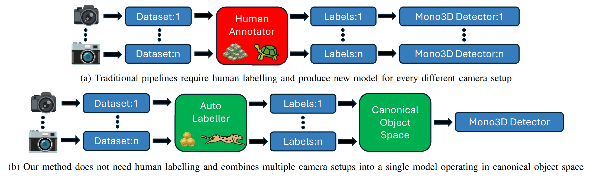

About Me
I am a computer vision PhD student at Visual Recognition Group, Czech Technical University in Prague, Faculty of Electrical Engineering, Department of Cybernetics. Lukas Neumann is my supervisor.
My primary focus lies in the weakly-supervised 3D detection for autonomous driving. My current research is on 3D detectors weakly-supervised by temporarily consistent 2D cues. In other words, using only an off-the-shelf visual component, such as Mask-RCNN, to generate pseudo-ground truth 3D labels.
I graduated from the MSc programme in Cybernetics And Robotics at Czech Technical University with honours in 2024. My master's thesis, focused on the Weakly-supervised 3D object detection for autonomous driving, has received a Dean's Award.
In my free time, I do running, orienteering, bouldering and walking around the city. I also enjoy a cup of good coffee.
Publications
-
Arxiv: MonoSOWA: Scalable monocular 3D Object detector Without human Annotations
MonoSOWA enables 3D object detection from a single RGB camera without human annotations, using Mask-RCNN for object detection and PseudoLiDAR for 3D scene understanding. Our Local Object Motion Model separates object and camera motion with ~700× speedup over prior work, enabling multi-dataset training across different camera configurations. Evaluated on three public datasets, it significantly outperforms previous methods while requiring no human labels.

-
ECCV 2024: TCC-Det: Temporarily consistent cues for weakly-supervised 3D detection
TCC-Det addresses the challenge of training 3D object detectors in LiDAR point clouds without manual annotations. By leveraging off-the-shelf vision components and the inherent consistency of the real world, our method enables training using large-scale sensor recordings, significantly reducing costs and increasing data availability. Evaluated on KITTI and Waymo Open datasets, it outperforms prior weakly-supervised approaches and approaches the performance of fully-supervised methods using human 3D labels.

Education
-
PhD programme in Informatics at Visual Recognition Group 2024 - today
Supervisor: Lukas Neumann
Czech Technical University in Prague, Faculty of Electrical Engineering -
MSc programme Cybernetics And Robotics 2021 - 2024 (with honours)
Czech Technical University in Prague, Faculty of Electrical Engineering
Thesis - 3D Object Detection for Autonomous Cars Weakly Supervised by 2D Cues (Dean's Award) -
Study abroad (Erasmus) 2022 - 2023
University of Southern Denmark, Faculty of Engineering -
BSc programme Cybernetics And Robotics 2018 - 2021
Czech Technical University in Prague, Faculty of Electrical Engineering
Thesis - Robotic arm for a mobile robot
Awards
-
Winner of the Structured Semantic 3D Reconstruction (S23DR) Challenge 2025 (10k USD prize) at the Urban Scene Modelling workshop, CVPR 2025.
Submission | ArXiv -
Dean's Award for master's thesis, 2024.
-
6th best master's thesis on the topic of Industry 4.0 in 2024. Award given by Cena Wernera Von Siemense, which focuses on the best master's and doctor's thesis in technical field on Czech Universities and Research Institutes.
Get In Touch
If you are interested in any of my work, feel free to contact me. I am always open to new opportunities and collaborations!